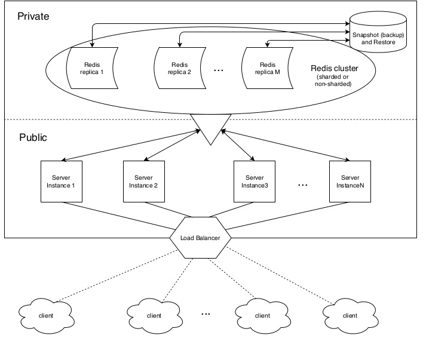
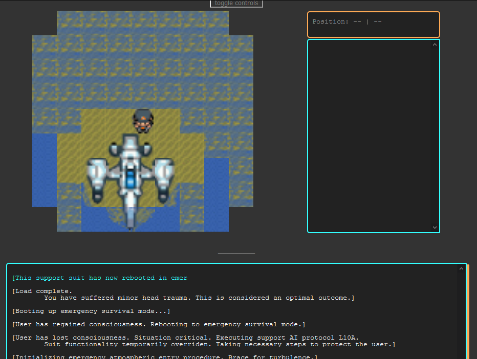

My work
❮ ❯MOTM Mobile App
project for a course
In a team of seven, we created a media reviewing app with a 3-tier architecture.
The client side was developed using Android Studio for Android version 4.4 and up, which communicated with the server to fetch data for various views.
The server then communicates with the database to obtain and return any necessary data.
Authorization data (necessary for certain requests) is securely sent over HTTPS along with the request.
Sessions were used to track authorized users.
Passwords were hashed using PBKDF2 to be securely stored in the database, and similarly verified.
AWS scalable collaborative canvas
project for a course
Taking inspiration from r/Place, my team of three created something resembling r/Place which is essentially a highly scalable, collaborative paint program.
We worked hard to implement the program using Amazon Web Services such as ECS, EC2 (and Fargate), ECR, and Elasticache.
My role in the team was to help orchestrate the whole thing and put together the functionality of each service we used, as well as a more specific role of setting up the networking and security.
This youtube video shows a time-lapse of r/Place where thousands of people (or rather computers) aimed to fill out pixel by pixel (something like 1 pixel every 5 minutes) to leave their mark on the canvas.
URL-Shortener service
project for a course
In a team of three, we created an URL-Shortener service that is scalable in that it can use multiple more devices (computers) to increase the capacity, capability, and reliability of the service.
This was done using sockets in java along with a SQLite3 database using a Master-Worker, or Orchestrator design pattern.
My team worked for a month on the project, where I took the role of lead architect and programmer.
I created most of the scripts and the java server and client which included the logical structure, health-check procedure, timeouts procedure, recovery procedure, and so on.
Discord Bot
Using Node.js (version 12, and the discord.js version 12 module) I created a discord bot intended for light use to do various tasks on discord both autonomously and on command.
The bot is modular and extensible in that you are able to remove or add in new functionality by adding or removing files from the specified directory.
It is also configurable via external config files.
The bot also features an tiered authorization system, where commands can be given a certain auth-level to prevent non-authorized users from using those commands.

DVD Image Matching
project for a course
This is an application I made that takes an input of an image of a cover for something like a movie or book and finds the closest match in the database and returns the relevant information including the title and author.
This was done using a Vocabulary Tree to store the database in a compact way that allows for quicker searching through the database, and the SIFT feature detection method which allows the program to detect points of interest in the image so that features such as a building can be identified and matched.
The cool thing is that this matching can be done even if the image is tilted or rotated, which turns out to be very challenging to do.
Urbivore
project for a course
In a team of four, we designed and created an early prototype for a virtual reality game, with the goal of having an immersive experience that is both educational and entertaining.
We created the game using the Unity engine, using assets from the Unity store as well as creating a few of our own on Blender.
The theme of the game was exploration and survival as wildlife in a region near an urban center.
In addition to natural events, the player would experience events and trends such as decaying amounts of non-harmful resources over time as well as through increased proximity to urban areas.
For this project I handled designing and implementing all functionality.
Warehouse Wars
project for a course
Using Node.js I created an offline single player version and an online multiplayer version of web game that supports controls for mobile and desktop where the goal is to live and trap all enemy AI with boxes surrounding it.
The web app game was outfitted with multiple levels of difficulty, an account and scoring system, a lives system, various game mechanics and AI enemies, a "room" or channel system with automatic management functionality, as well as a chat system.
I worked in a team of 2, where my partner focused on the database and react components, while I focused on making the multiplayer server and creating the game.
Each AI was created by myself, as well as all the additional game mechanics I added in that extended over the given requirements.
I have recently recreated the game on Java for practice, improving the structure and adding support for multi-threading and a much larger number of rooms using room IDs or tokens, however removing the account and authorization system.
Settling-In
project for a course
This is a game I made using only HTML, CSS, and JavaScript for an English course during the summer where the goal of the project was to create an immersive experience through textual elements of a game.
The premise of the project was to use an online creation tool like Twine to create a story-based game, however I took up the challenge of making something from scratch using the skills I had at the time.
The initial game page had very few elements and poor design choices or missing features. I received the critique and updated the game with many more features and story, fixing the game for a more enjoyable user experience.
--Something interesting to note is that the loading bar doesn't really do anything! It's just for style! but I did end up putting some loading parts in during the "loading" animations just to give it a bit more feel, so I guess it does something after all?--
Pacman AI
project for a course
Another project I have done is making Pacman AI where Pacman will make aim to make intelligent choices in eating all the pellets while avoiding all the ghosts, but sometimes powering up to avoid or eat the ghosts.
In this project I explored various AI techniques including informed and uninformed search algorithms, minimax, alpha-beta and expectimax search, Bayes' nets, inference, and particle filtering.
CUDA API
project for a course
In a small project I implemented and explored the effects of applying an image filter using GPU resources compared to when using CPU resources.
Both the CPU and GPU implementation were done by myself. The CPU implementation uses 'pthreads' which allows the CPU to use multiple cores (multi-threading) to speed up the computation of a task.
The GPU implementation was done using CUDA and a Nvidia Geforce graphics card which has multiple more cores
A famous saying in the coding community is "what's faster, using 4 oxen to plow a field or using 1024 chickens?" which is essentially what the goal of this project was to explore.
The conclusion was enlighteningly, it depends (on the context and use).